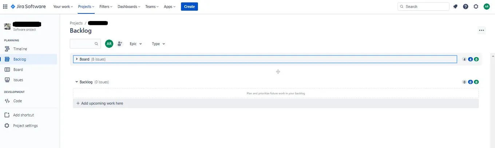

When development stops being the bottleneck
Originally posted on LinkedIn, March 26, 2025.
The backlog is empty. A developer walks over and says, “We finished everything. There are no more features in the backlog, and the bugs are fixed. What’s next?”
That no longer sounds imaginary. AI development tools like Cursor are changing how software gets built. Work that used to take a week can now be completed in a day.
Companies are suddenly facing a previously unthinkable question: what happens when development is no longer the bottleneck?
The old model, where a product manager decides what to build and a developer makes it happen, is dying. A new way of working is taking its place. Engineers now need business responsibility and a deep understanding of the user, the product, and how their work connects to the bottom line.
As Squad members, we need to ask:
- Why are we building this?
- How will we measure success?
- How does this feature help the company grow?
I like how PostHog describes it: “Engineers lead teams. The product manager’s role is a compass, not a captain. They don’t decide the destination. They help make sure we don’t drift off course.”
This is exciting for developers because it brings us back to the heart of the profession. It is not only about code or infrastructure. It creates a direct connection to the problem, the user, and the value we deliver. It asks more from developers and engineering managers, but it also gives the work much more meaning.
The world where product wants something yesterday and engineering delivers it tomorrow is shrinking. More of the pressure is moving to other parts of the company, including marketing, product management, and leadership.
The shift is already underway. Organizations that are not preparing for a world where development is no longer the bottleneck will face it soon. I can already see that developers who have adopted Cursor produce code at twice the rate, or more, of those who still work “manually.”
